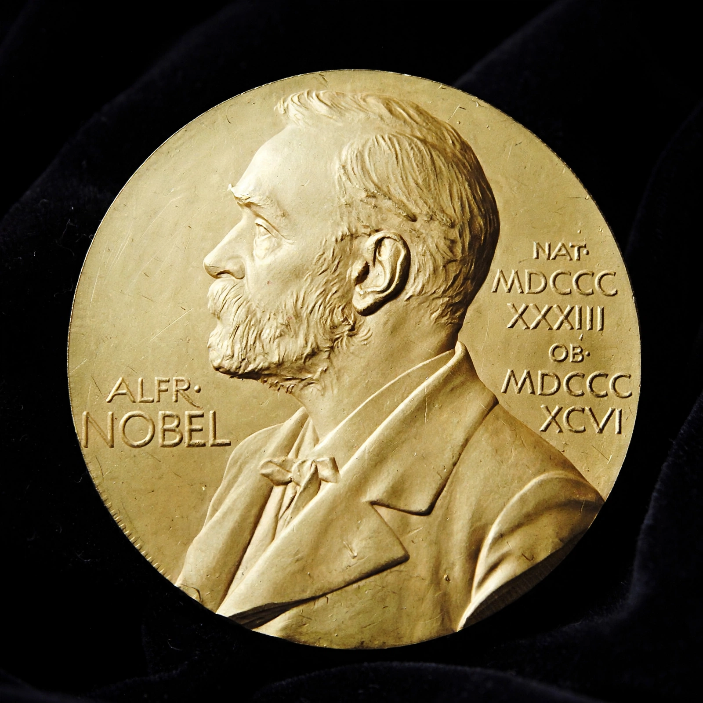

| Nobel Prize | |
|---|---|
 | |
| Awarded for | Outstanding contributions in physics, chemistry, physiology or medicine, literature, peace, and economic sciences |
| First awarded | 1901 |
| Founder | Alfred Nobel |
The Nobel Prize is a set of annual international awards bestowed for outstanding work in physics, chemistry, physiology or medicine, literature, and peace, established by the 1895 will of Swedish chemist and inventor Alfred Nobel. A sixth prize, in economic sciences, was added in 1968 by Sweden's central bank. The prizes are widely regarded as among the world's most prestigious awards.
Nobel, inventor of dynamite, left most of his fortune to fund prizes for those who "conferred the greatest benefit to humankind". The first prizes were awarded in 1901. Ceremonies are held annually on 10 December, the anniversary of Nobel's death — in Stockholm, except for the Peace Prize, presented in Oslo.
Laureates are selected by the Royal Swedish Academy of Sciences, the Karolinska Institutet, the Swedish Academy, and the Norwegian Nobel Committee respectively. Each prize includes a gold medal, a diploma, and a monetary award (11 million Swedish kronor in recent years). Prizes cannot be awarded posthumously and may be shared by at most three people.
The prizes have drawn criticism for omissions, Eurocentrism, and controversial choices. Notable multiple laureates include Marie Curie (physics and chemistry) and the International Committee of the Red Cross (three Peace Prizes).